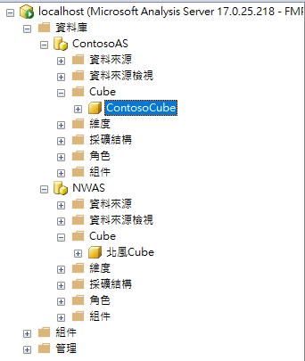

關於我
畢業於僑光科技大學，所讀系所是[資訊管理系]，社團是[愛演戲劇社]， 曾在天下數位股份有限公司擔任資訊助理，父親是電腦工程師，所以我對電腦程式感興趣， 興趣是寫程式，演戲，在學校學過:VB程式語言、C語言、C＋＋程式語言、Java、HTML網站設計、 SQL語法、dreamweaver網頁設計程式基礎、flash X6基礎、Corel Draw繪圖程式基礎、 PHP基礎、會計、自學ptyhon、寫過2年兼職的ASP.NET Web Forms。 在五專和四技的專題負責手機程式設計，五專時專題為”3D吃豆人小精靈”， 四技時專題為”連線對戰賓果手機遊戲”，在四技三年級為全班第三名， 我有手排汽車和機車駕照，可以騎機車上路，有乙級電腦裝修證照， 學過用VB程式把自己焊接的電路板燈泡依序發亮，會自己租裝網路線插頭 ，架設過DHCP系統，在職訓局學過網路管理CCNA課程6個月， 並用PHP、HTML和JavaScript 寫過網站，有堆高機證照，有在鈺善園護理之家實習過， 並完成世貿中心舉辦的照顧銀髮族及活動設計，領有結訓證照，高普考試訓練8年， 訓練科目為作文、公文、法學緒論、電腦計概、資料庫、資管與資安、資料結構、資訊通訊、 程式設計、系統專案管理，在安心上工工作過6個月， 在中區高速公路工程養護局擔任資訊人員將近3個月，之後又被請回去做了做了1年10個月， 在深思設計工作3個月多，在職訓4個月中學習python編寫及爬蟲，SQL Server資料庫管理與分析，資料清理、建模與高效查詢， Power BI報表製作與 DAX 查詢分析，請給我一個工作機會，謝謝您！
個人技能
學歷
- 惠華托兒所
- 立人國小
- 立人國中
- 僑光技術學院 - 五專
- 僑光科技大學 - 四技
求職需求
我希望找到一個數據驅動的職位，能充分運用 SQL Server、Power BI 與 Python 的技能，參與資料庫管理、報表分析與資料工程專案。 理想的工作環境是支持團隊合作、提供挑戰性專案、並重視數據決策的企業。 我期望能在此職位中持續成長，提升資料分析能力，並為企業提供具價值的數據洞察與自動化解決方案。
| power bi 報表 | Azure 靜態web | yfinance_project 抓yahoo的股票資料 |
| 爬蟲:抓氣象局特定位置的資料 | 資料傳入SQL:模擬股票抓取動作 | 爬蟲:抓取臺灣銀行美金匯率並存入Azure SQL |
| 那些人較易結婚或離婚 |
以下圖片為Power BI Report Server的展示圖:


以下Cube製作展示圖:
